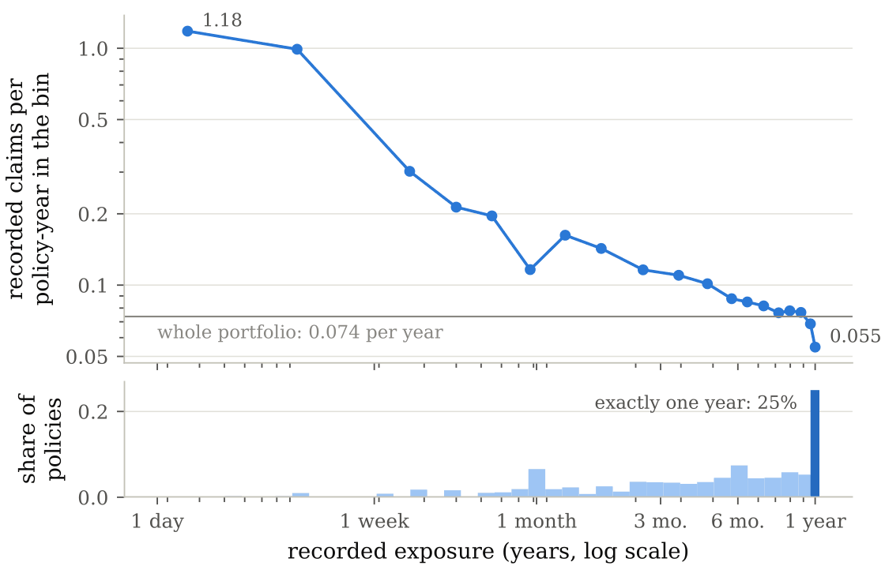

-
2005–2010
Head of non-life pricing
Allianz Suisse
I led the non-life insurance pricing team. Main projects:
- Tariff construction and monitoring for motor third-party liability (TPL), motor own damage (OD) and household insurance
- Pricing of motor fleets, including development of the pricing tool
- Pricing of stop-loss reinsurance for pension funds, including development of the pricing tool
- Modelling of hailstorm risk
- Development of the Customer Future Value methodology for Allianz Group, and its implementation at Allianz Suisse
- Methodology development and R implementation for geo-pricing, price optimisation, competitive pricing, dynamic monitoring and portfolio cleaning
-
2000–2005
Reserving actuary
Allianz Suisse
- Development of the reserving methodology for non-life insurance
- Programming and automation of the reserving process
- Reserving for the direct lines of business and for reinsurance
- Development of a risk aggregation methodology
-
1994–1996
Actuary
INSIG
In the profession
Qualified actuary of the Swiss Association of Actuaries (SAA) since 2004, and a member of its Education Committee since 2011.
From industry to research
Drawing on this experience, I also work on applied problems in non-life insurance, risk management and financial mathematics. With my PhD students I study Bayesian tree models for pricing, which split a portfolio into risk groups, for claim frequency and for claim severity; I also work on the segmentation of insurance customers.
-
2026
Poisson–inverse Gaussian leaves for Bayesian CART claims frequency models
E. Hashorva, M. F. Murillo Hernández

Recorded claims per policy-year by recorded exposure, for all 677,991 policies of a motor insurance portfolio, with the exposure distribution below. Full-year records are a quarter of the policies and about half of the total exposure. -
2026
Bayesian trees for normalised insurance severity: Gamma–Burr and tractable alternatives
S. Deponte, E. Hashorva
-
2026
Insurance customer mosaics: policyholder profiles, weighted cells and customer segmentation
E. Hashorva
A second line of work is finite-horizon ruin in the forms that matter for reporting and regulation: ruin in every reporting block or sliding window, and simultaneous ruin of several lines of business. More on the Research page, and in two illustrations: ruin in every block, ruin in every window and ruin on a Brownian metric tree.